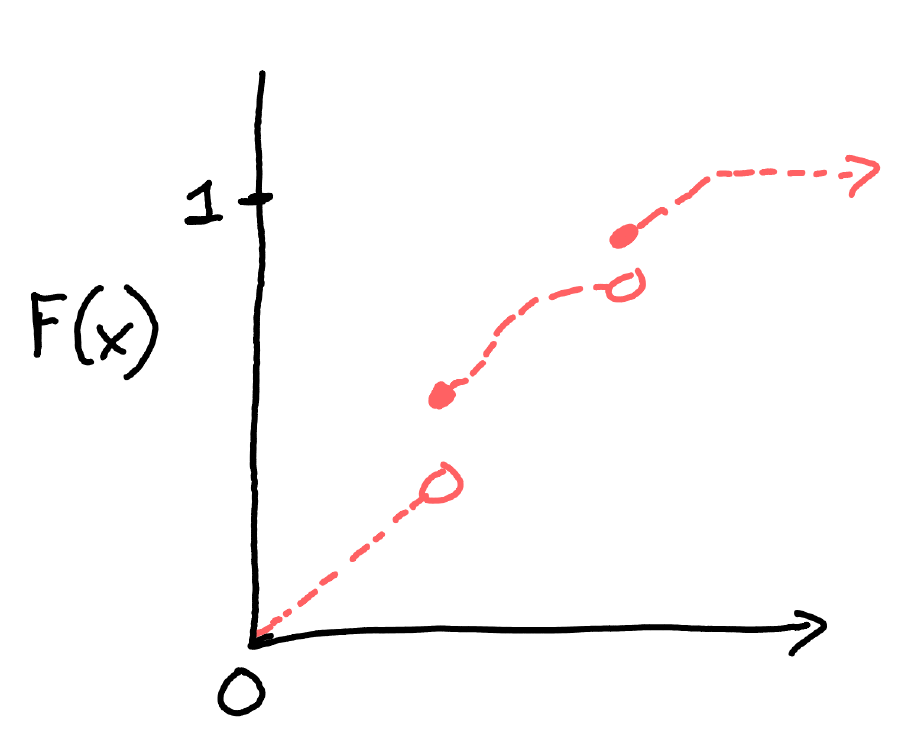

Probability and Statistics for Economics
UCalgary Math Camp 2023, Instructor: Len Goff
Section 1: Probability
Section 1: Probability & random variables
CDF examples
A "typical CDF" for a continuous random variable with unbounded support
CDF examples
A "typical CDF" for a discrete random variable
CDF examples

Random variables may be a mix of continuous and discrete
Examples of density functions
Expectation for a mixed distribution
Suppose that $$F(x) = p \cdot F_c(x) + (1-p) \cdot F_d(x),$$ where $F_c(x)$ is a differentiable CDF with density $f(x)$, and $F_d(x)$ is a discrete CDF with associated probability mass function $\pi_j$ for support points $x_j$.
Note that the definition of $\mathbb{E}[X]$ is linear in the CDF $F(x)$.
This implies that the expectation is equal to $p$ times an expectation according to $F_c$, plus $1-p$ times an expectation according to $F_d$:
$$\mathbb{E}[X] = \int_{-\infty}^\infty x\cdot dF(x) = \color{orange}{p} \cdot \int_{-\infty}^\infty x\cdot f(x)\cdot dx + \color{orange}{(1-p)}\cdot \sum_{j} x_j \cdot \pi_j$$
Conditional distributions and expectations
Example: let $X$ and $Y$ be two uniform $[0,1]$ random variables that are independent. Then $$F_{XY}(x,y) = F_X(x)\cdot F_Y(y) = x\cdot y$$
Example: let $X$ and $Y$ be two uniform "logistic" random variables that are independent. Then $$F_{XY}(x,y) = F(x)\cdot F(y) \textrm{ where } F(t) = \frac{1}{1+e^{-t}}$$
In the last example, the joint PDF is $$f_{XY}(x,y) = \frac{d}{dx}F(x)\cdot \frac{d}{dy}F(y) \textrm{ where } \frac{d}{dt}F(t) = \frac{e^{-t}}{(1+e^{-t})^2}$$